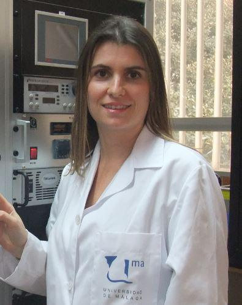
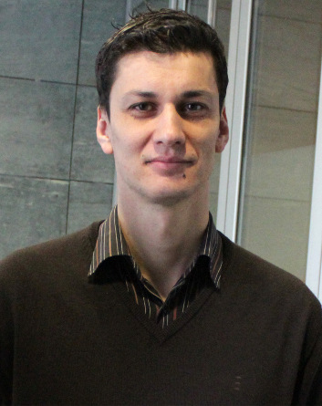
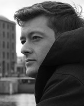

Dra. Rocío Ponce Ortiz
- Licenciada en Ingeniería Química por la Facultad de Ciencias de la Universidad de Málaga en 2003. 
- A continuación, se integró con una beca FPDeI (Junta de Andalucía) en el grupo de investigación del Prof. Juan Teodomiro López Navarrete, defendiendo la Tesis Doctoral en Febrero de 2008.
- Desde Octubre de 2008 hasta Octubre de 2011, realizó una estancia postdoctoral en el grupo de investigación del Prof. Tobin J. Marks en Northwestern University (Illinois, USA), gracias a la concesión de una beca postdoctoral del MICINN y una beca europea Marie Curie IOF (International Outgoing Fellowship). Fruto de esta etapa postdoctoral destaca la publicación de 23 artículos de investigación original en revistas de alto prestigio, 3 artículos de revisión y un capítulo de libro.
- En Octubre de 2011 se reincorporó a la Universidad de Málaga, consiguiendo un contrato Ramón y Cajal en Noviembre de 2013.
- Actualmente es autora de 57 artículos de investigación, con un índice de citación (h) de 26. Cabe destacar la reciente concesión de una Bolsa de Investigación L´Oreal-UNESCO “For Women in Science”.
Cinco artículos científicos
- “On the Biradicaloid Nature of Long Quinoidal Oligothiophenes: Experimental Evidence Guided by Theoretical Studies” R. Ponce Ortiz, J. Casado, V. Hernández, J. T. López Navarrete, P. M. Viruela, E. Ortí, K. Takimiya, T. Otsubo. Angew. Chem. Int. Ed. 2007, 46, 9057.
- “Organic n-Channel Field-Effect Transistors Based on Arylenediimide-Thiophene Derivatives” R. Ponce Ortiz, H. Herrera, R. Blanco, H. Huang, A. Facchetti, T. J. Marks, Y. Zheng, J. L Segura. J. Am. Chem. Soc. 2010, 132, 8440.
- “Rational Design of Ambipolar Organic Semiconductors: Is Core Planarity Central to Ambipolarity in Thiophene-Naphthalene Semiconductors? R. Ponce Ortiz*, H. Herrera, C. Seoane, J. L. Segura, A. Facchetti, T. J. Marks. Chem. Eur. J. 2012, 18, 532-543.
- “Polymer Solar Cells with Enhanced Fill Factors” X. Guo, N. Zhou, S. J. Lou, J. Smith, D. B. Tice, J. W. Hennek, R. Ponce Ortiz, J. T. López Navarrete, S. Li, J. Strzalka, L. X. Chen, R. P. Chang, A. Facchetti, T. J. Marks, Nature Photonics 2013, 7, 825.
- “The unusual electronic structure of ambipolar dicyanovinyl-substituted diketopyrrolopyrrole derivatives” A. Riaño, P. Mayorga Burrezo, M. J. Mancheño, A. Timalsina, J. Smith, A. Facchetti, T. J. Marks, J. T. López Navarrete, J. L. Segura, J. Casado, R. Ponce Ortiz*. J. Mater. Chem. C 2014, 2, 6376.
Dr. Moisés Gulías Costa
- Moisés Gulías estudió en la Universidad of Santiago de Compostela donde obtuvo su título de Doctor en el año 2006 bajo la supervisión del Prof. José L. Mascareñas. Durante sus estudios de doctorado llevó a cabo una estancia en la Universidad de Stanford (2004) con el Prof. Barry. M Trost. 
- Entre 2007 and 2009 fue becario postdoctoral Marie-Curie postdoctoral en el grupo de Matthew J. Gaunt (Universidad de Cambridge).
- En 2010 volvió a la Universidad de Santiago de Compostela como investigador Parga-Pondal.
- Sus intereses científicos incluyen el descubrimiento de nuevas metodologías para activación de enlaces no reactivos que faciliten la síntesis de moléculas complejas y el desarrollo de nuevos métodos de catálisis enantioselectiva. En el 2015 Moisés Gulías ha recibido el premio Thieme Chemistry Journal Award.
Publicaciones recientes:
- “Rhodium-Catalyzed (5+1) Annulations Between 2-Alkenylphenols and Allenes: A Practical Entry to 2,2-Disubstituted 2H-Chromenes”, N. Casanova, A. Seoane, J. L. Mascareñas, M. Gulías* Angew. Chem. Int. Ed., 2015, 54, 2374-2377.
- “Rhodium (III)-catalyzed dearomatizing (3+2) annulation of 2-alkenylphenols and alkynes”, Seoane, A.; Quinones, Noelia; Casanova, N.; Mascareñas, Jose L.; Gulias, M.* J. Am. Chem. Soc., 2014, 136, 7607-7610.
- “Straightforward Assembly of benzoxepines by Means of a Rhodium (III)-Catalyzed C-H Functionalization of o-Vinylphenols”, Seoane, A.; Quinones, Noelia; Casanova, N.; Mascareñas, Jose L.; Gulias, M.* J. Am. Chem. Soc. 2014, 136, 834-837.
- “Rhodium(III)-catalyzed intramolecular annulations involving amide-directed C-H activations: synthetic scope and mechanistic studies”, Quinones, Noelia; Seoane, A.; Mascareñas, Jose L.; Gulias, M.* Chem. Sci. 2013, 4, 2874-2879.
Dr. Carlos Martí-Gastaldo
- Carlos Martí-Gastaldo se licenció en Químicas en la Universidad de Valencia, recibiendo el premio extraordinario de licenciatura. 
- Completó su tesis doctoral en el Instituto de Ciencia Molecular (ICMol) bajo la dirección de los Prof. Eugenio Coronado y J. R. Galán Mascarós en 2009, recibiendo el premio extraordinario de doctorado.
- En 2010 obtuvo una Marie Curie y se trasladó a la Universidad de Liverpool (Reino Unido) para trabajar en el grupo del profesor Matthew J. Rosseinsky. Durante este periodo trabajó en el desarrollo de MOFs biomiméticos basados en péptidos.
- En 2013 inició su carrera científica independiente tras recibir una URF Fellow de la Royal Society of Chemistry. En 2014 se incorporó al ICMol como investigador Ramón y Cajal para desarrollar MOFs estables para su aplicación en fotocatálisis, transporte iónico y aplicaciones optoelectrónicas.
- Carlos es co-autor de más de 50 trabajos publicados en revistas de alto impacto con más de 1750 citas y ha sido reconocido con premios, como el “Young Researcher Olivier Kahn Recognition Award” (2009), el “NanoMatMol” (2010), el “Suschem Postdoc” (2011) o el “Premio Científico-Técnico Ciudad de Algemesí” (2015).
Selected papers:
- “Chemical and Structural Stability of Zirconium-based Metal-Organic Frameworks with Large Three-Dimensional Pores by Linker Engineering” S. Kalidindi, S. Nayak, M.E. Briggs, S. Jansat, A. Katsoulidis, G.J. Miller, J.E. Warren, D. Antypov, M. Prestley, C. Martí-Gastaldo, M.J. Rosseinsky Angew. Chem. Int. Ed. (2015), 127, 223-228.
- “Sidechain control of porosity closure in single and multiple peptide-based porous materials by cooperative folding” C. Martí-Gastaldo, D. Antypov, J. E. Warren, M. E. Briggs, P. A. Chater, P. V. Wiper, G. J. Miller, Y. Z. Khimyak, G. R. Darling, N. G. Berry, M. J. Rosseinsky Nature Chem. (2014), 6, 343-351.
- “Enhanced stability in rigid peptide-based porous materials” C. Martí-Gastaldo, J. E. Warren, K. S. Stylianou, N. O. Flack, M. J. Rosseinsky Angew. Chem. Int. Ed. (2012), 51, 11044-11048.
- “Coexistence of Superconductivity and Magnetism by chemical design” E. Coronado, C. Martí- Gastaldo, E. Navarro-Moratalla, A. Ribera, S. J. Blundell, P. Baker Nature Chemistry (2010), 12, 1031-1036.
Dr. Julio Lloret Fillol
Dr. Julio Lloret Fillolnació en Carcaixent (Valencia) en 1977.
Se licencio en la Universidad de Valencia y obtuvo el grado de doctor en 2006 en la misma Universidad bajo la supervisión del Prof. Pascual Lahuerta y la Prof. Julia Perez-Prieto, trabajando en la síntesis de compuestos quirales organometálicos de dinucleares rodio (II), sus aplicaciones catalíticas y estudios teóricos.
 En Diciembre de 2006 se trasladó al grupo del Prof. Lutz H. Gade en la Universidad de Heidelberg (Alemania) como becario postdoctoral del Ministerio de educación y ciencia (2006-2008) y con una Marie Curie IEF (2008-2010). Su trabajo se centró principalmente en catálisis enantiselectiva y en el estudio de los mecanismos de reacción con complejos organometálicos de titanio, zirconio y hafnio.
En Diciembre de 2006 se trasladó al grupo del Prof. Lutz H. Gade en la Universidad de Heidelberg (Alemania) como becario postdoctoral del Ministerio de educación y ciencia (2006-2008) y con una Marie Curie IEF (2008-2010). Su trabajo se centró principalmente en catálisis enantiselectiva y en el estudio de los mecanismos de reacción con complejos organometálicos de titanio, zirconio y hafnio.
En Abril del 2010, se unió a la Universidad de Girona como Ramón y Cajal y alInstitut de Química Computacional i Catàlisi donde empezó su carrera científica independiente gracias al programa Marie Curie Reintegration Grant para desarrollar “modular ligands for water splitting”.
En Noviembre de 2014 se incorporó al Instituto Catalán de Investigación Química (ICIQ) como líder de grupo de investigación bajo el programa CELLEX. Recientemente se le ha concedido un proyecto “Consolidator Grant” del “European Research Council” (Co-ERC) para desarrollar nuevas transformaciones reductivas utilizando luz y agua. Actualmente, sus líneas de investigación se focalizan en el desarrollo de la catálisis sostenible y la activación de pequeñas moléculas.
Julio Lloret es co-autor de más de 55 publicaciones en revistas de alto impacto y ha sido reconocido con el premio GEQO 2014 a Jóvenes Investigadores.
Artículos Seleccionados:
1. “Evidence for an Oxygen Evolving Fe–O–Ce Intermediate in Iron-Catalysed Water Oxidation”Zoel Codolà, Laura Gómez, Scott T. Kleespies, Lawrence Que, Jr.,* Miquel Costas* and Julio Lloret-Fillol* Nature Communications01/2015, 6:5865
2.- “Triggering the generation of an iron(IV)-oxo compound and its reactivity towards sulfides by RuII photocatalysis” Anna Company,* María González-Béjar, Gerard Sabeña, Laura Gómez, Miquel Costas,* Julia Pérez-Prieto* Julio Lloret-Fillol* J. Am. Chem. Soc. 2014, 4624-4533
3. “Photoinduced catalytic water reduction to hydrogen by new cobalt complexes based on pentadentate nitrogenate ligands” Arnau Call, Zoel Codolà, F. Acuña-Pares Julio Lloret-Fillol* Chem. Eur. J.. 2014, 20, 6171
4. “Highly Effective Water Oxidation Catalysis with Iridium Complexes through the use of NaIO4” Zoel Codolà; João M. S. Cardoso; Beatriz Royo; Miquel Costas; Julio Lloret-Fillol* Chem. Eur. J. 2013, 19, 7203-7213
5. “Efficient Water Oxidation Catalysts Based on Readily Available Iron Coordination Complexes” Julio Lloret Fillol,* Zoel Codolà, Isaac Garcia-Bosch, Laura Gómez, Juan José Pla, Miquel Costas,* Nat. Chem. 2011, 807-813